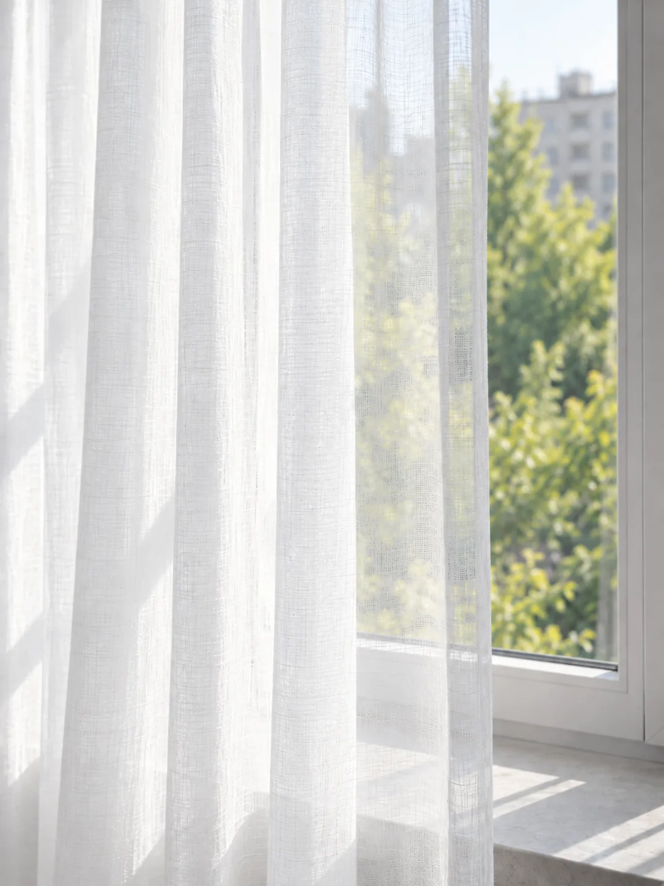

Тюль на замовлення в Києві
Тюль — це напівпрозорий шар на вікні, який працює зі світлом, а не з темрявою. Він розсіює пряме сонце, вирівнює освітлення в кімнаті й задає ритм складок, за яким читається все вікно. В ательє SCALA тюль шиють під конкретний отвір: дизайнер приїжджає зі зразками, знімає розміри й дивиться, як тканина поводиться у вашому світлі.

Що це за конструкція і як вона поводиться на вікні
Тюль вішають першим шаром, ближче до скла. Його завдання — не затемнювати кімнату, а керувати світлом: прибирати різкі тіні й пом'якшувати контраст між яскравим склом і темнішими стінами.
Ключовий параметр — коефіцієнт складки, тобто у скільки разів ширина розкроєного полотна більша за довжину карниза. Щільним тканинам вистачає меншого збору, напівпрозорим потрібно більше: у розрідженому полотні складка читається лише тоді, коли тканини справді багато. Зазвичай для тюлю беруть коефіцієнт від 2,5 до 3, а сітчасті й дуже легкі полотна виглядають переконливо ближче до верхньої межі. Зшитий майже без збору тюль читається на вікні як натягнута плівка.
Друга змінна — вага полотна. Льон-сітка й деворе важчі, лягають глибокою хвилею. Вуаль і батист легші й дають м'який вертикальний стовпчик, органза тримає пружну, майже гофровану складку. Щоб низ не гуляв, його обробляють важким подвійним підгином або вшивають шнур-обтяжувач — саме він змушує полотно висіти вертикально.
Про приватність варто говорити чесно. Удень з вулиці видно менше, ніж вам зсередини, бо надворі світліше. Увечері, коли в кімнаті вмикають світло, все навпаки — силуети проглядаються. Жодне напівпрозоре полотно цього не змінює, тому для спальні й ванної тюль планують у парі з другим шаром або з рулонною чи римською шторою.
Кому підходить, а кому — ні
Тюль доречний там, де денне світло є цінністю кімнати. У вітальні з великим склінням він знімає засвіт і робить світло рівним. У кабінеті прибирає відблиск на екрані, не вимикаючи денного світла. У дитячій дає розсіяне світло вдень і працює в парі зі щільним шаром або рулонною шторою на сон. На кухні виправданий за умови довжини до підвіконня або тканини, яку не шкода часто прати. Окремий випадок — вікна на північ, де затемнювати вже нема чого.
- спальня, де сплять до пізнього ранку: сам тюль не дає темряви;
- перший поверх упритул до тротуару — увечері приватності не буде;
- кухня з активним смаженням: напівпрозоре полотно набирає жир і запах швидше за щільне;
- дім із котом — сітчасті структури тримають затяжки, безпечніші гладкі полотна;
- балконні двері з щоденним проходом: тут кроять два полотна з розведенням.
Тепер про обмеження. Про них чесніше говорити до замовлення, а не після монтажу:
Від чого залежить вартість
Ціну формує не «вид штори», а сукупність факторів. Ось ті, що впливають найбільше:
- ширина карниза й висота від точки кріплення до низу полотна;
- обраний коефіцієнт складки — це прямий множник витрати тканини;
- тип тканини, її вага та ширина рулону: полотна з готовим низом кроять поперек, і це змінює розкрій;
- обробка верху: шторна стрічка, люверси, петлі чи ручне закладання складки;
- обробка низу й бокових кромок, наявність обтяжувача;
- карниз: тип, довжина, кількість рядів, матеріал стіни або стелі під кріплення;
- геометрія отвору — еркер, скіс, арка, нестандартна висота стелі.
Точну суму рахують після заміру.
Які тканини пасують і чому
Для тюлевого шару з нашого каталогу ми працюємо насамперед з Light Air: це легкі напівпрозорі полотна, які тримають високий коефіцієнт складки й пропускають світло, не даючи затемнення.
Другим шаром до тюлю йдуть щільні тканини того ж каталогу — Портьєрна тканина, Канвас, Мікровелюр, Оксамит, Velvet Luxe. Саме вони беруть на себе темряву й вечірню приватність, тоді як тюль лишається денним шаром. Колекції Happy, ICON, Jolly, Lion та Urban Gold дизайнер також привозить на замір: остаточний вибір роблять на вікні, при вашому світлі, а не за фотографією.
Напівпрозору тканину обов'язково дивляться на просвіт: як вона поводиться проти сонця, чи видно структуру плетіння з середини кімнати і який малюнок утворює складка, коли тканину зібрати рукою.
Карниз, кріплення, механізм
Стельовий шинний профіль на два-три ряди — базове рішення, коли потрібні тюль і портьєра одночасно. Складка починається від самої стелі, і кімната візуально стає вищою.
Штанга з кільцями доречна, коли карниз є частиною декору. Люверси на тюлі працюють не завжди: металеве кільце важке для легкого полотна, а крок люверса задає жорсткий ритм складки. Шторна стрічка лишається найбільш ремонтопридатним варіантом — після прання складку легко зібрати заново.
Нішу під карниз у гіпсокартоні закладають до чистової стелі, з розрахунком на два ряди й на руку, яка розсуватиме полотно. Довгий профіль не тримається на самому гіпсокартоні — потрібен закладний брус або анкер у бетон. Електрокарниз має сенс на високому чи важкодоступному склінні: тяга для тюлю невелика, тож питання лише в тому, чи є куди підвести живлення.
Заміри й типові помилки
Заміряти вікно і заміряти штору — різні дії. Найчастіші помилки:
- ширину рахують по вікну, а не по карнизу: полотно має заходити за отвір, інакше по краях лишається світлова смуга;
- знімають одну висоту: підлога і стеля рідко паралельні, тому висоту беруть щонайменше у трьох точках;
- міряють до монтажу карниза: висота рахується від бігунка, гачка чи кільця, а не від стелі;
- не враховують радіатор: довге полотно над батареєю швидше жовтіє й надувається від конвекції;
- не вирішують зазор до підлоги: полотно або лягає на неї, або висить над нею;
- не фіксують віконні ручки, відкоси й решітки, у які впирається тканина.
Тому замір робить дизайнер, а не замовник з рулеткою. Виїзд зі зразками в межах Києва безкоштовний, і на місці одразу видно, що саме з цим вікном не так.
Догляд і прання
Напівпрозорі полотна забруднюються не плямами, а рівномірно — пилом і міським нальотом, тому втрату білизни помічають пізно. Кілька правил:
- перед пранням зняти металеву фурнітуру: кільця й гачки рвуть полотно в барабані;
- прати в мішку на делікатному режимі, температуру брати з етикетки тканини;
- віджим мінімальний або взагалі без нього — заломи на органзі та вуалі виправляються не завжди;
- вішати вологим одразу на карниз: полотно випрямляється власною вагою;
- шторну стрічку перед пранням розпустити, а після — зібрати заново.
Що дизайнер привезе на замір
Нижче — позиції з нашого каталогу, які найчастіше беруть на цю конструкцію. Остаточний вибір роблять на вікні: тканина у вашому освітленні виглядає інакше, ніж на фотографії.